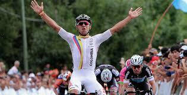

El fútbol o balompié en Colombia es el deporte más popular del país.?Esto se debe en buena parte al gran cubrimiento mediático, a la popularidad de sus principales equipos, con participaciones en torneos internacionales logrando títulos como la Copa Libertadores de América, y a las apariciones incesantes de talentosos futbolistas que llevaron a la Selección Colombia a seis mundiales. Su desarrollo lo sitúa en la segunda línea sudamericana histórica.?
Su máximo logro internacional fue el título obtenido en la Copa América 2001 realizada en Colombia (siendo campeón invicto durante todos los partidos del campeonato y sin recibir goles en contra). Gracias a ello, el equipo disputó la Copa FIFA Confederaciones 2003 ocupando el cuarto lugar, haciendo una buena participación frente los mejores de cada confederación en ese entonces.
En la Copa Mundial de Fútbol ha tenido seis participaciones, las de 1962, 1990, 1994, 1998, 2014 y 2018. En Brasil 2014 tuvo su mejor desempeño, alcanzando el quinto puesto final.
El fútbol o balompié en Colombia es el deporte más popular del país.?Esto se debe en buena parte al gran cubrimiento mediático, a la popularidad de sus principales equipos, con participaciones en torneos internacionales logrando títulos como la Copa Libertadores de América, y a las apariciones incesantes de talentosos futbolistas que llevaron a la Selección Colombia a seis mundiales. Su desarrollo lo sitúa en la segunda línea sudamericana histórica.?
Su máximo logro internacional fue el título obtenido en la Copa América 2001 realizada en Colombia (siendo campeón invicto durante todos los partidos del campeonato y sin recibir goles en contra). Gracias a ello, el equipo disputó la Copa FIFA Confederaciones 2003 ocupando el cuarto lugar, haciendo una buena participación frente los mejores de cada confederación en ese entonces.
En la Copa Mundial de Fútbol ha tenido seis participaciones, las de 1962, 1990, 1994, 1998, 2014 y 2018. En Brasil 2014 tuvo su mejor desempeño, alcanzando el quinto puesto final.

La Federación Colombiana de Ciclismo es el máximo ente rector del ciclismo en Colombia y el representante del país ante la Unión Ciclista Internacional. El actual presidente es Jorge Ovidio González quien se desempeña en el cargo desde el año 2017 por un periodo de 4 años.
La misión principal es fomentar, apoyar, desarrollar, coordinar, organizar, formular y vigilar procesos y proyectos en las distintas modalidades del ciclismo, con el objetivo de lograr títulos a nivel continental, mundial y en Juegos Olímpicos, ubicando este deporte, en lo más alto del concierto internacional y además ser reconocidos como potencia mundial.
Los programas ciclísticos que están bajo su administración son el BMX, Ruta, Pista, Ciclomontañismo, Paracycling.